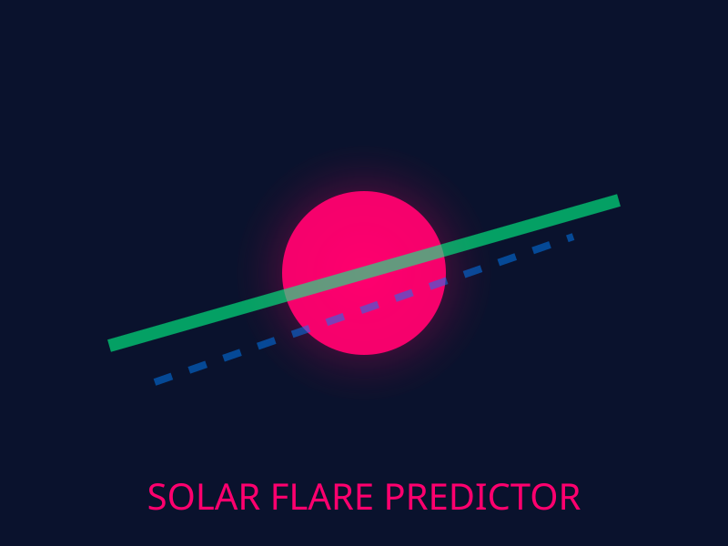
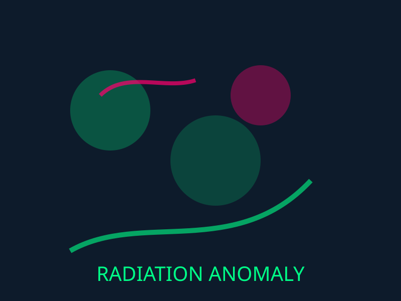
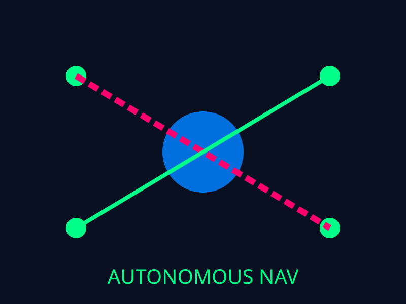
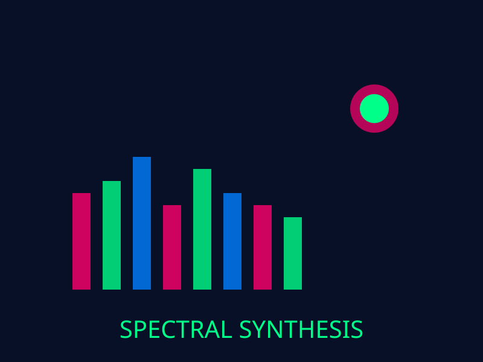
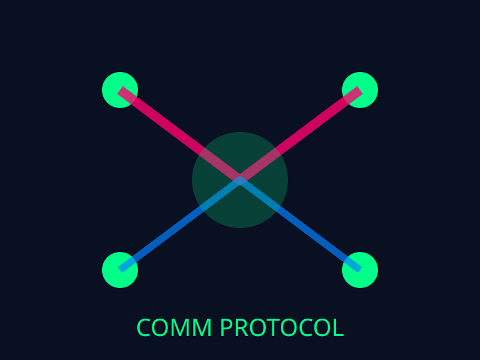

Exoplanet Discovery Network
2087–2089Deep neural network system for classifying exoplanet characteristics from spectroscopic data. Discovered 7 previously unknown exoplanet classes through unsupervised clustering and achieved 99.8% classification accuracy on known stellar phenomena.

Solar Flare Prediction System
2085–2088Transformer-based time series forecasting model for predicting solar flare events 72 hours in advance. Integrated with Jupiter Station early warning system, preventing 12 critical operational incidents with real-time alert deployment.

Cosmic Radiation Anomaly Detector
2084–2087Unsupervised anomaly detection system using variational autoencoders (VAE) for identifying unprecedented cosmic radiation patterns in deep space. Enabled discovery of 3 rare stellar phenomena and optimized radiation shielding protocols across orbital platforms.

Autonomous Navigation AI
2083–2086Reinforcement learning agent for spacecraft autonomous navigation in complex asteroid fields. Trained on 10M+ simulated trajectories, deployed to 8 deep-space probes with 99.5% safe navigation success rate and 40% fuel efficiency improvement.

Stellar Spectral Synthesis Model
2082–2085Generative model for synthesizing stellar spectra using conditional GANs. Enables simulation of 100,000+ synthetic stellar observations for training downstream astronomy models, reducing observational data collection time by 85%.

Neural Communication Protocol Optimizer
2081–2084Machine learning system for optimizing data transmission protocols between distributed space stations. Achieved 60% reduction in bandwidth overhead and 45% latency improvement for inter-planetary communications using graph neural networks.